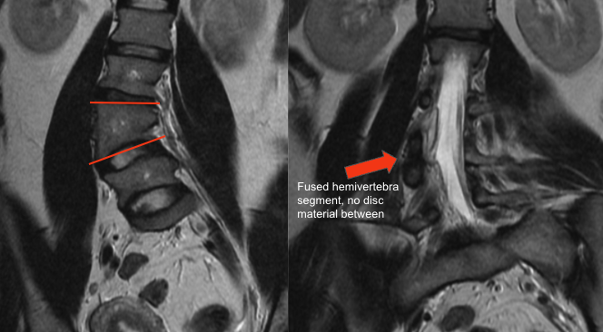

Adapted from: Gaillard F, Fused hemivertebra. Case study, Radiopaedia.org (Accessed on 28 Dec 2025) https://doi.org/10.53347/rID-41487
1) Description of Measurement
Hemivertebra morphometry characterizes the degree of vertebral wedging and segmentation pattern of a hemivertebra, a congenital anomaly caused by failure of vertebral body formation. These parameters are critical in predicting curve progression, assessing deformity severity, and guiding timing and extent of surgical correction.
The measurement consists of both: Wedge angle — quantifying the angular deformity contributed by the hemivertebra and segmentation status — classifying the hemivertebra as fully segmented, semi-segmented, or unsegmented, based on the presence of adjacent disc spaces.
2) Instructions to Measure
A. Wedge Angle Measurement (Coronal MRI)
B. Segmentation Assessment (Axial + Coronal MRI)
3) Normal vs. Pathologic Ranges
Wedge Angle
4) Important References
Marks DS, Qaimkhani SA. The natural history of congenital scoliosis and kyphosis. Spine (Phila Pa 1976). 2009 Aug 1;34(17):1751-5. doi: 10.1097/BRS.0b013e3181af1caf.
Ruf M, Harms J. Hemivertebra resection by a posterior approach: innovative operative technique and first results. Spine (Phila Pa 1976). 2002 May 15;27(10):1116-23. doi: 10.1097/00007632-200205150-00020.
Basu PS, Elsebaie H, Noordeen MH. Congenital spinal deformity: a comprehensive assessment at presentation. Spine (Phila Pa 1976). 2002 Oct 15;27(20):2255-9. doi: 10.1097/00007632-200210150-00014.
5) Other info....
Fully segmented hemivertebrae with large wedge angles are most likely to cause progressive deformity.
Morphometry should be interpreted alongside:
MRI is preferred for:
These measurements inform decisions regarding: